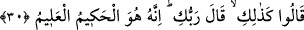

yapılması gerektiğini söyleyen âlimler de vardır.
“Hayretten elini yüzüne vurdu.” “Sakk”, bir şeye enli bir şeyle vurmak anlamındadır.
Bir kimsenin bir şeye enli başka bir nesne ile şiddetlice vurması bu fiille anlatılır.
Kamus’ta ifâde olunduğu üzere bu kelime umûmî olarak; şiddetli veya zayıf her türlü
vurmak için kullanılır. Buna göre Sâre, hayız kanının sıcaklığını hissettiği zaman
utancından dolayı eliyle yüzüne vurmuştur. Başka bir tefsire göre Sâre şaşkınlık içinde
olan bir kimsenin yaptığı gibi parmak uçlarıyla alnına vurmuştur. Nitekim tanımadıkları
bir şeyle karşılaştıklarında böyle yapmak kadınların adetidir.
Kâşifî, kadınlar çok şaşırdıklarında bu şekilde ellerini yüzlerine vurur, demektedir.
“Ben kısır bir kocakarıyım, (benden nasıl çocuk olur)?” dedi. Yâni “Ben kısır bir
ihtiyarım. Gençliğimde dahi çocuk doğurmamışken; şimdi yaşım doksan dokuz olmuşken
nasıl doğururum?!” İhtiyar kadına “acûz” denmesinin sebebi, onun her türlü işten âciz
kalmasındandır. “Akm” kelimesinin asıl mânâsı, kadında hâmileliği kabul etmeyen bir
kuruluğun, verimsizliğin olmasıdır. “Akîm” kocanın suyunu kabul etmeyen kadına
verilen addır.
Kamus’ta müellif “ukum” kelimesini, “rahimde meydana gelen ve çocuğun oluşmasına
mâni olan çukurluk” olarak ifâde etmiştir.
Ayn-ul-Meâni’de akîm, “rahminde kapalılık bulunan kimseye verilen addır” diye
geçer. İyileşmesi beklenmeyen kısırlık hastalığına sebep olan işte bu rahim içindeki
kapanmadır. “Âkır” de aynı anlamdadır. Yalnız, kadındaki kısırlık hâmile kalamama,
erkekteki ise hanımını hâmile bırakamama ve bu yüzden çocuk sâhibi olamamadır. Sâre
kısırdı. Hiç çocuğu olmamıştı. Yaşı küçükken, gençlik çağlarında doğuramayıp yaşı
ilerleyip de hayızdan kesilme dönemine geldiğinde meydana gelecek olan bu olaya
şaşırıp onun vukû bulacağını uzak bulmuş ve onlara bunu ifâde için âyetteki bu sözleri
söylemiş ve bu işin âdete aykırı olduğunu belirtmiştir. Onlar da kendisine, Allah
Teâlâ’nın kudretinden şüphe etmemesini söylemişlerdi.
30. Onlar: «Bu böyledir. Rabbin söylemiştir. O, hüküm ve hikmet sâhibidir,
bilendir» dediler.
“Dediler ki” bu sana müjdelediğimiz şeyleri “Rabbin böyle söyledi.” Biz ancak
O’nun haberlerini bildiririz, kendiliğimizden bir şey söylemeyiz.
Allah Teala’nın “kavil” kelimesini iki defa getirmesinin sebebi, ikinci defa melekler
vâsıtasıyla Sâre’yi, “Sana müjdelediğim çocuğu uzak görme ve şaşırma bu işe!”
şeklinde uyarmak içindir. (Ancak bu kelâmı ona melekler söylemiş) ve “Sana bu
müjdeyi vermemizi Allah emretmiştir” ilavesinde bulunmuşlardır.
“O, hüküm ve hikmet sâhibidir, bilendir.” Onun sözü hak, fiili de şüphesiz ki